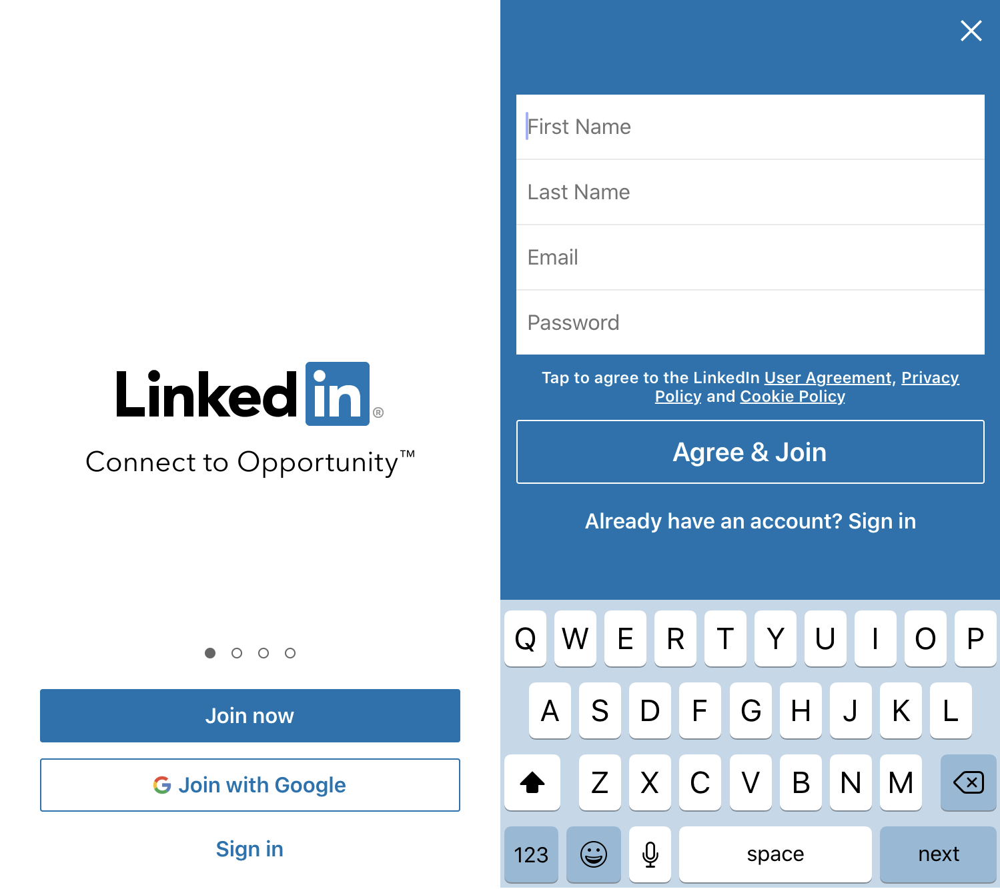
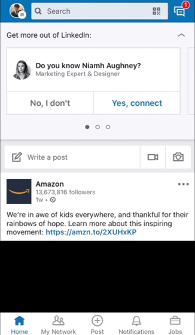

This is the LinkedIn Page!
Here I have compiled information on what Linked is and what it can be used for within the workspace/college environment for better understanding of the business worl and entrepreneurship.
LinkedIn is a social media platform geared to professionals. It enables you to network and to build your professional portfolio, but you can also go out into the world and look for a new job. Professionals who've been in business for decades use LinkedIn and so do newly minted college grads.
How to make an account...
For LinkedIn you will need either a smartphone or a computer with internet access.
-To make an account on Linkedin you can either visit the website at LinkedIn.com or download the app in the appstore!
Once you have downloaded the app you should see a screen like this.
Simply select "Join Now" and input your details.
Now that you have filled out your sign-up information, you should be on the Homepage
How to make a post...
LinkedIn has a very formal, business type professionalism when it comes to posts. Usually on linkedin you want to display yourself as best you can so that searching businesses see you as the right candidate for them. So when it comes to making a post you will need to think about what you're going to post as your career is dictated from these decisions.
You can make posts about your thoughts on specific things within your career or entrepreneurship itself but to do that you will need to:
-Open the app to the main page.
-Click the write a post text area at the top or the "+Post button found at the bottom of the page.
-Once here you can write about what you want to talk about and attach pictures/videos if you want to.
Useful Tip!
LinkedIn is a great tool to broaden anyones understanding of the Business and Entrepreneurial world. Many use it as a way to promote their Cirriculum Vitae. However, there is a great feature within linkedin called the "My Network" tab. This feature searches for people within your career and displays them to you, asking if you know the person and whether you will will like to connect with them.
This build your network and allows networking for projects to become streamlined in one place.
To do this you will need to:
-Open LinkedIn.
-Select the "My Network" tab at the bottom.
-From here you can add your contacts to try connect with them or search through the list provided by LinkedIn from searching through your profile and listing others who also have worked in the same place/field/college as you.